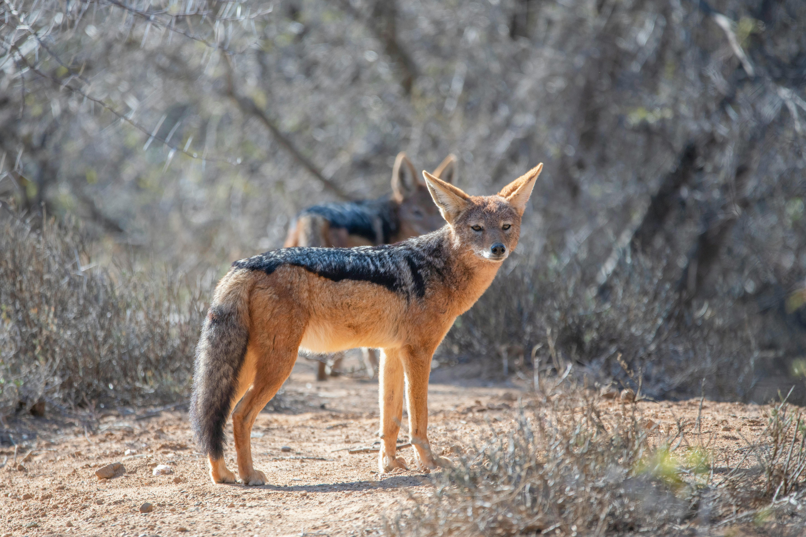

This website offers some examples of different types of kitties, whether they are actually kitties of not doesn't matter. You can also sign up for more pictures of kitties!
Some examples of kitties

These are some land-kitties right there.
This is an ocean kitty.
These are also clearly some kitties.
This is another kind of land-kitty.
“A sharp distinction between humans and ‘animals’ is essential if we are to bend them to our will, make them work for us, wear them, eat them — without any disquieting tinges of guilt or regret. It is unseemly of us, who often behave so unfeelingly toward other animals, to contend that only humans can suffer. The behavior of other animals renders such pretensions specious. They are just too much like us.”
– Carl Sagan
Call to action! It's time!
Sign up for more pictures of kitties by clicking that button right over there!